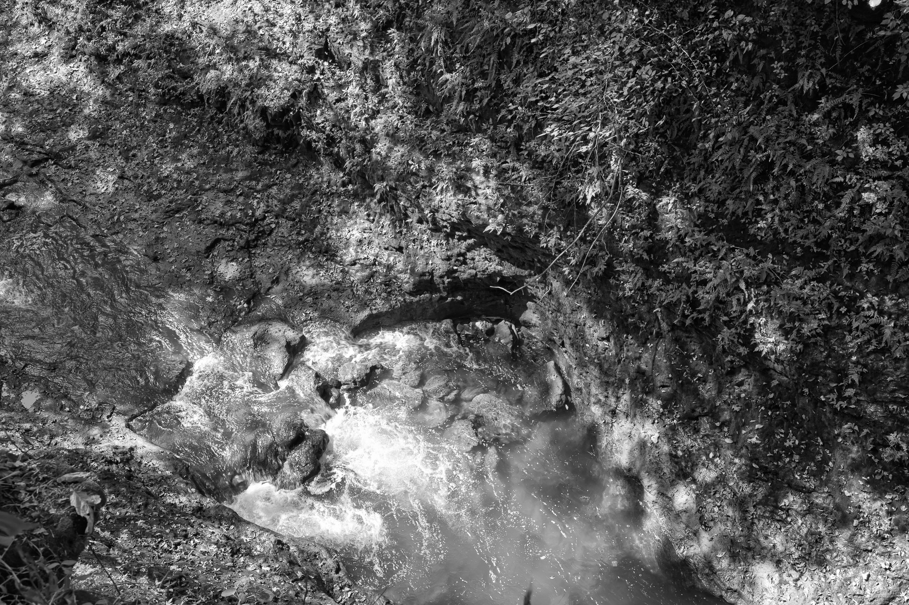
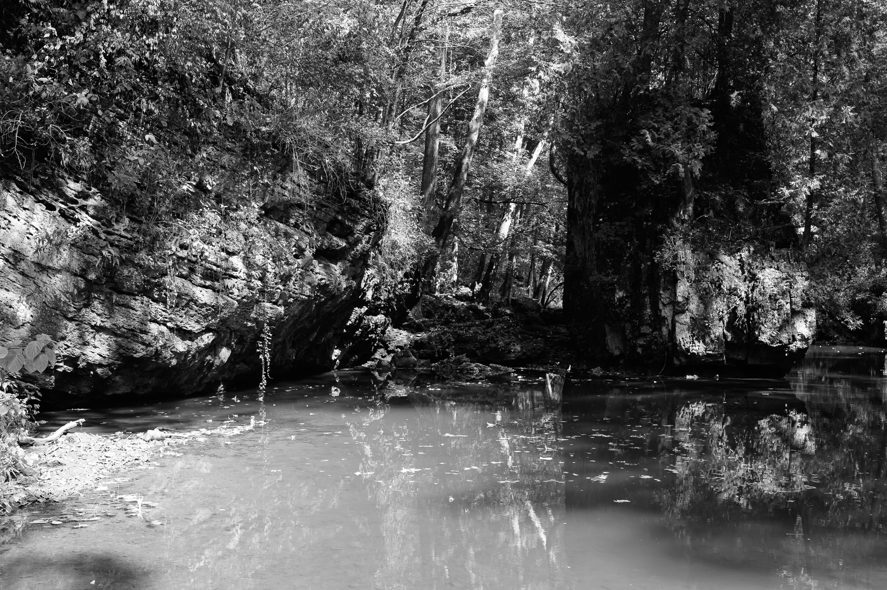
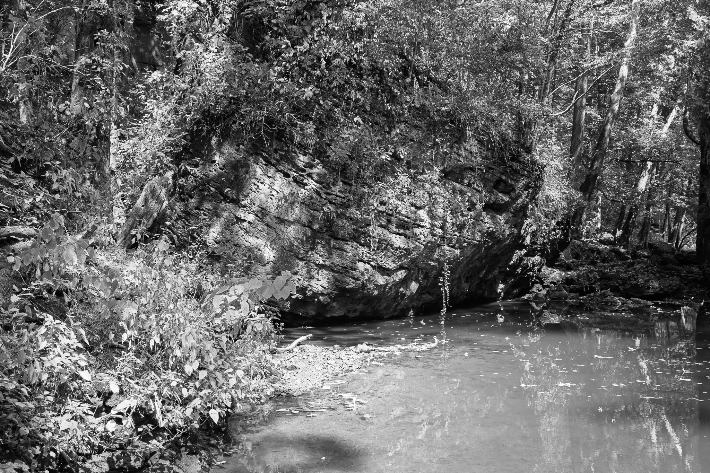
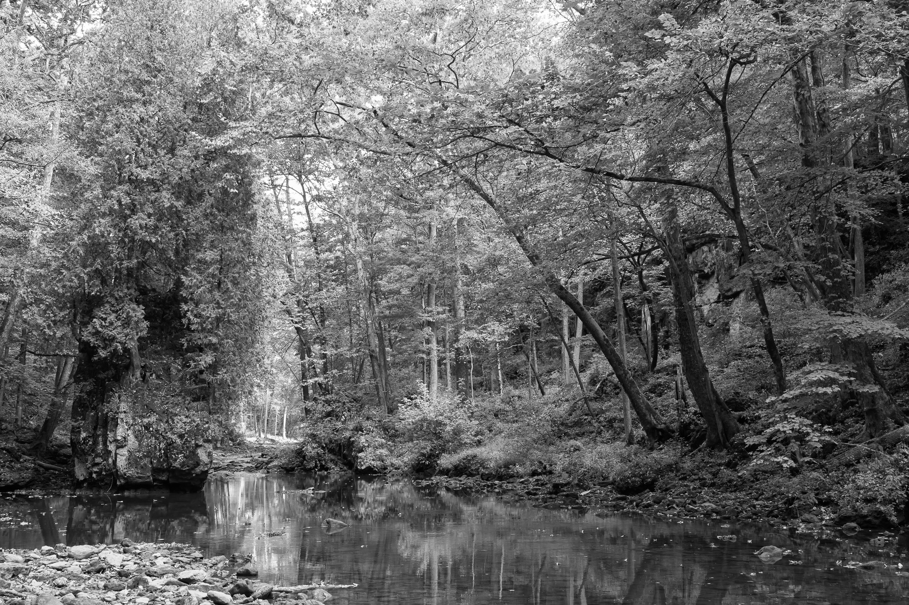
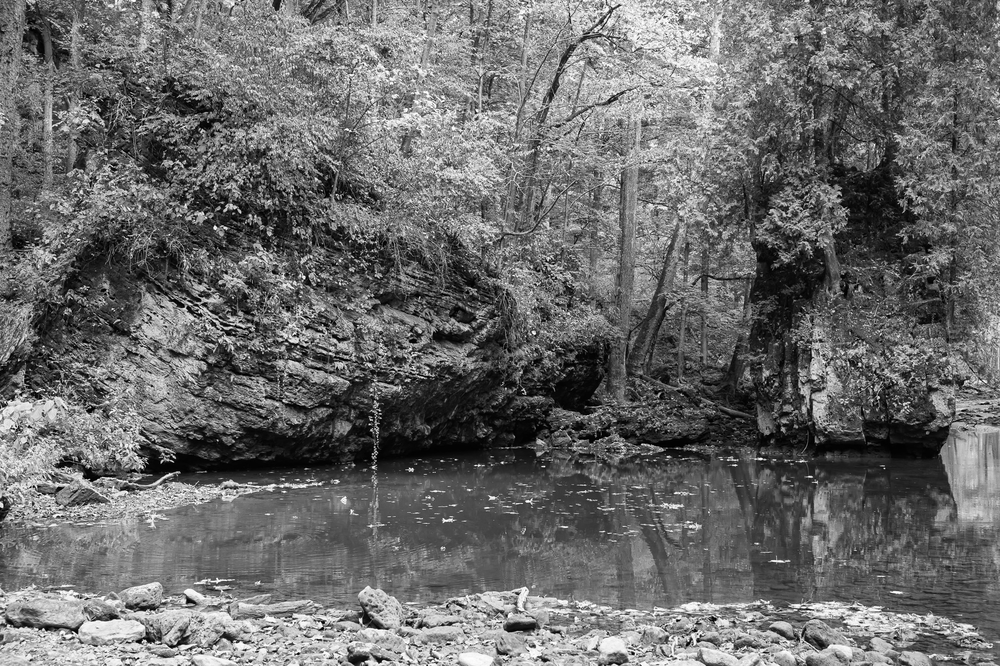

Public Lands Institute
Sites
Archive
About
Clifton Gorge State Nature Preserve
OH

Clifton Gorge State Nature Preserve 1 · 2025-09-17
_DSC0372.jpg

Clifton Gorge State Nature Preserve 2 · 2025-09-17
_DSC0396.jpg

Clifton Gorge State Nature Preserve 3 · 2025-09-17
_DSC0397.jpg

Clifton Gorge State Nature Preserve 4 · 2025-09-17
_DSC0405.jpg

Clifton Gorge State Nature Preserve 5 · 2025-09-17
_DSC0408.jpg
View all 5 images
← Mount Airy Forest
Parker Woods →